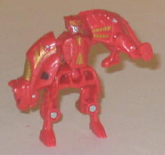
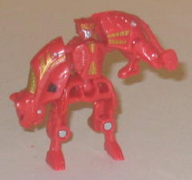

Allegiance : Decepticon
Size : Mini-Con (comes in a 3-pack with Megatron and Rodimus )
Difficulty of Transformation : Very Easy
Color Scheme : Reddish orange and some black and silver and metallic gold
Rating : 6.0
 Rampage
Rampage

Allegiance
: Decepticon
Size
: Mini-Con (comes in a 3-pack
with Megatron and
Rodimus
)
Difficulty of Transformation
: Very
Easy
Color Scheme
: Reddish orange and
some black and silver and metallic gold
Rating
: 6.0
(NOTE: Because this is a repaint, this is not a full-blown review. This mainly covers any changes made to the mold and the color scheme, and merely compares it to the Predator Attack Minicon Team. For a review on the mold itself, read the review of the Predator Attack Minicon Team here .)
Rampage's color scheme
is based off of the G1 Predacon of the same name, and shares the same beast
mode as well, which is certainly a plus. The reddish-orange is a particularly
good shade of the color, and the gold serves as a magnficient highlighting
color. What small bits of black and gold there are look good, too. However,
as good a color as it is, Rampage still has too much orange on him-- it
either needs to be broken up with more paint apps or some of his plastic
should have been molded in another color. Also, when taken by itself it's
not at all a bad color scheme, but it's REALLY similar to this mold's previous
color scheme, only with the orange being a bit more reddish and the black
stripes being replaced with a few gold paint apps. Considering the prices
that one has to pay for exclusives like this, a bit more effort to differentiate
them from the originals would have been appreciated.
No mold changes have
been made to Botcon Rampage.
 Megatron
Megatron

Allegiance
: Decepticon
Size
: Ultra (comes in a 3-pack with
Rampage and Rodimus)
Difficulty of Transformation
: Easy
Color Scheme
: Light milky gray,
black, and some transparent dark blue, light red, metallic silver, moderately
dark blue, and dull orangish-yellow
Rating
: 8.9
(NOTE: Because this is a repaint, this is not a full-blown review. This mainly covers any changes made to the mold and the color scheme, and merely compares it to Energon Ultra Megatron. For a review on the mold itself, read the review of Energon Ultra Megatron here .)
Megatron retains some of his classic colors-- namely, light gray and black-- but he's got enough unique twists to definitely set him apart as a seperate "mirror-verse" character. For one, he's got a lot more black than Megatron traditionally had, including on his brand-new head mold. The head mold makes Megatron look very beneficient, something that admittedly had to be a bit hard to pull off by the sculptor, since we're so used to seeing Megatron being the master of evil. His expression looks very peaceful, and his helmet is a bit less "bucket"-shaped, hearkening back to how his helmet originally looked in the early Marvel G1 comics. Red and blue are new colors for Megs, but he pulls them off well-- in addition to being traditionally "good" colors on TFs, which help with the whole "good bad guy" image, they contrast remarkably well with the black and gray. Megatron's also got quite a few paint apps, so no complaints about large open spaces of the same color here. My only real complaint about the figure as far as the color scheme goes is the same complaint I have with Rampage-- the original Energon Megatron was mostly light gray, and this version of Megatron has light gray in almost all the same spots, too. I mean, I know that they're Megatron's traditional colors, but c'mon, mix it up at least a little, maybe by swapping where the black and gray were, for example. Or even something like painted over the gray with a fine silver finish would have really helped it look great-- after all, this is a Botcon exclusive, you might as well spare no expense.
The Megatron & Rampage
set is an interesting take on the molds-- the former more than the latter--
but both suffer from having a major color almost exactly the same as their
molds' previous release, which knocks them down quite a few pegs in my
book. For such an expensive set, this isn't really something to brag about.
Still, Megatron has quite the unique color scheme, and it's very intriguing
to see a "good" Megatron for once.
Review by Beastbot